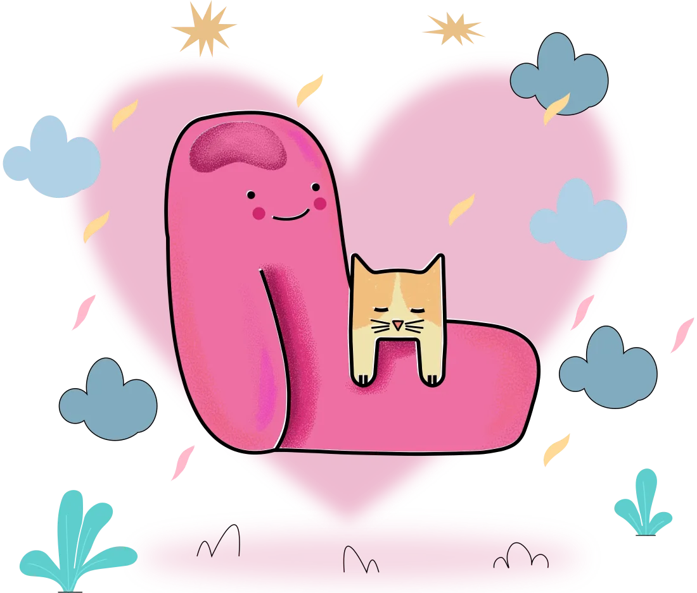
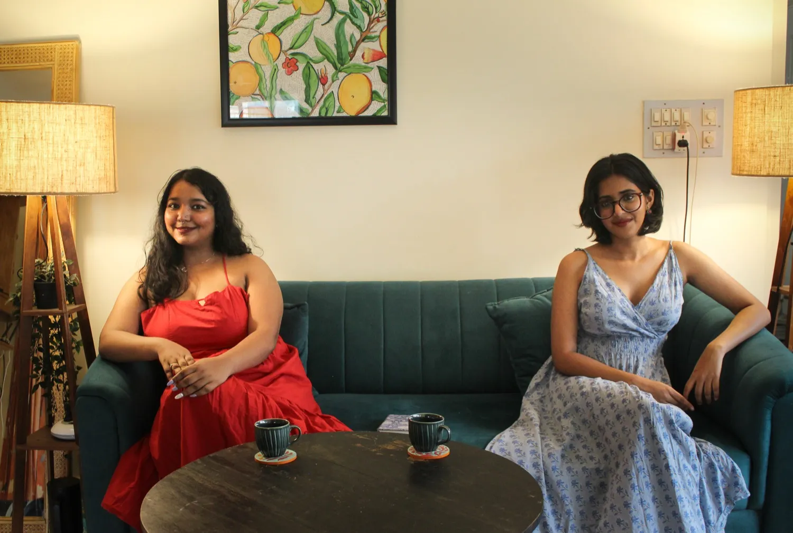
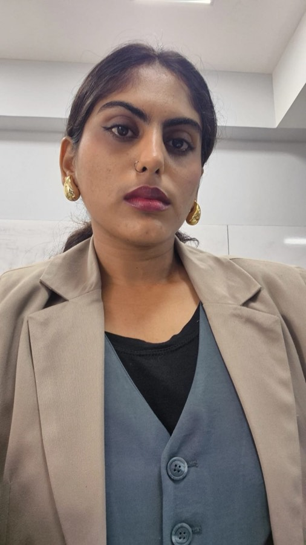
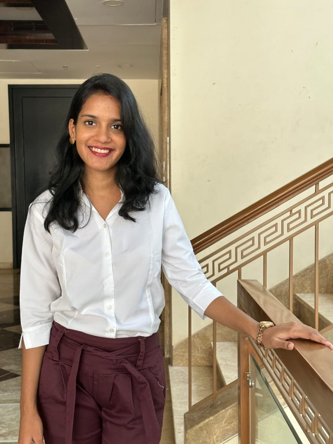
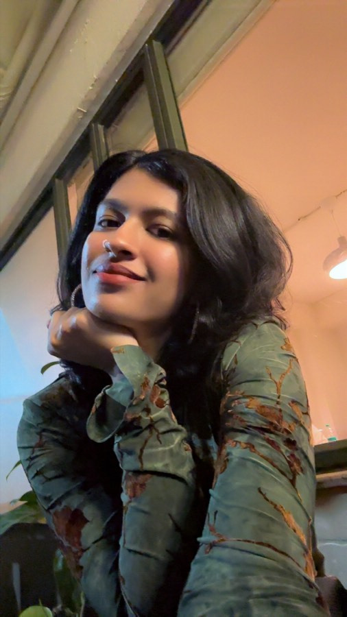
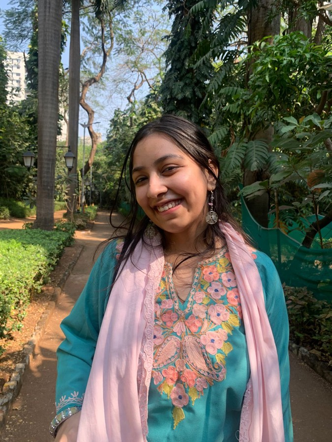
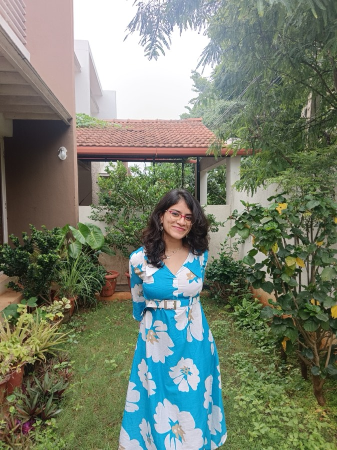
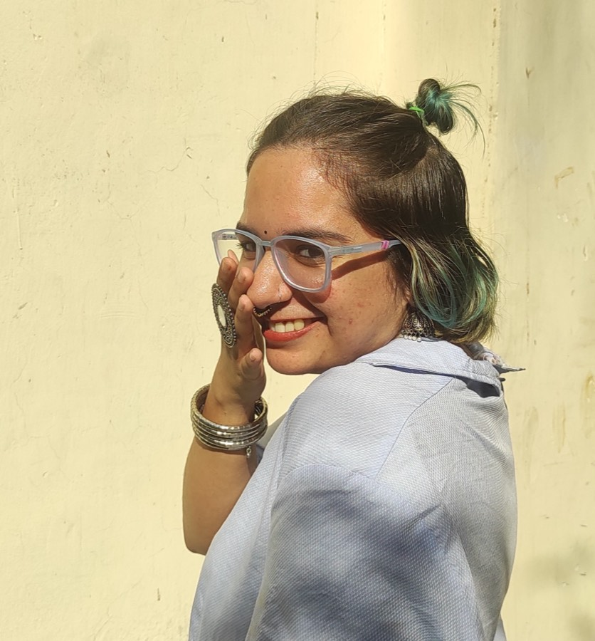

Individual Therapy
A space just for you, where your thoughts, feelings, and struggles are met with empathy and curiosity. Together, we work at your pace to untangle what feels heavy, build clarity, and move toward self-acceptance.
A safe space for the ones who feel not enough, too much, and everything in between. We're a team driven by passion and lived experiences of what it feels like to carry the weight, seek the light, and finally feel seen.

About us
At Soft Spaces Therapy, Shreeja & Meg came together with a vision of building a practice that welcomes every story and every identity. Both bring diverse experiences that shape the way they hold space — with openness, curiosity, and respect. Their shared commitment is to create therapy that feels accessible, inclusive, and deeply human, where no one has to question whether they belong.

Services
Every offering is shaped around the same belief — that real change happens in a setting where you feel safe enough to be yourself.
A space just for you, where your thoughts, feelings, and struggles are met with empathy and curiosity. Together, we work at your pace to untangle what feels heavy, build clarity, and move toward self-acceptance.
Relationships can hold both love and conflict. Couple therapy creates a safe ground to explore communication, connection, and the patterns that keep you stuck — so you and your partner can learn to listen, heal, and grow together.
Healing doesn't have to be lonely. In our groups, you'll find community with others navigating similar struggles, share your story without judgment, and discover strength in collective understanding.
Interactive spaces for learning, reflecting, and growing. Our workshops are designed to help students and young adults explore mental health, relationships, and self-care in a way that feels practical, engaging, and real.
Two names, one belief
Soft Spaces Therapy runs on a two-tiered model — and every full fee helps fund Iraada, our redistribution arm, where the same care is offered free and low-cost to people the system has priced out.
The practice
Paid sessions with senior clinicians, and accessible sessions with early-career therapists under close supervision. Trauma-informed, liberation-oriented, neurodivergent-affirming care for individuals, couples and groups — in Delhi, Bangalore and online.
Book a discovery callThe redistribution arm · intention, will, resolve
A community mental health collective offering free therapy, support groups and open resources for those under-served by existing systems — queer and trans clients, neurodivergent folks with histories of misdiagnosis, and survivors of interpersonal, caste-based and institutional violence. Iraada is not an emergency service; it offers ongoing, relational support.
Refer or enquire →We are not a charity. Charity moves money downward and calls it benevolence — Iraada moves resources sideways, from people who have access to people who need it. We are inside the identities we serve: queer, neurodivergent, South Asian, and carrying our own histories.
Bookings
Ready to take the first step toward healing? Here's how it works:
Contact us via email, WhatsApp, or message us on Instagram or LinkedIn. We'll get back to you within 48 hours.
Schedule a free 15-minute discovery call to explore whether we're the right fit. We'll match you with the therapist who's the best fit for your needs.
Sign the therapy contract, and we'll start your personalized journey together.
Resources
Essays, helplines, worksheets, and books we share with our clients — alongside emergency support resources. Open the one that meets you where you are.
Proof, not promises
We don’t only hold sessions. We build things, write things, and give them away.
A full magazine on living with BPD, written with the people who live it. Research, poems, refusal — made from the “Stories That Hold Us” writing group.
Read the magazine →Twenty pages of grounding, safety-planning and staying — made from clinical and lived experience, for the days that feel unliveable.
Download the toolkit (PDF) →An eighteen-page care guide grown out of our affinity support-group work — practical, gentle, and written to be used.
Download the guide (PDF) →In the press & on the record:
The Caravan · The Polis Project · The Progressive · Channel NewsAsia · Newsreel Asia · NAMI (US)
Research on self-management and bipolar disorder in India, presented at NIMHANS, Bengaluru — World Bipolar Day 2024
Meet the team
Soft Spaces Therapy was born from the belief that healing should feel like coming home to yourself — not like fitting into someone else's definition of “wellness.” We are therapists with lived experience, political commitments, and a refusal to separate the personal from the collective. Here, therapy is slow, collaborative, and deeply human.

Senior psychologist · Supervisor
They/She
Queer- and neurodivergent-affirmative, non-pathologising care. Psychologist by day, sociologist by night — because symptoms never tell the whole story of a life lived inside systems.
Book a call with Aiman→
Therapist
She/Her
Young adults 18–30 — relationships, family dynamics, life transitions, procrastination, confidence. Emotion-Focused Therapy, CBT and Art Therapy, blended to fit you.
Book a call with Nishtha→
Therapist
She/Her
Complex and developmental trauma, shame, identity and sexuality, chronic illness and disability. IFS, narrative, somatic. “You are always the expert on your own life.”
Book a call with Saima→
Therapist
She/Her
Anxiety, burnout, self-doubt, shame, and intersecting marginalisations. Gentle, relational, deliberately slow — a particular home for neurodivergent and LGBTQIA+ clients.
Book a call with Jamila→
Therapist
She/Her
Stress, anxiety, self-esteem, attachment and relationships, life and career transitions. Warm, conversational, at your pace — curious about how early experience shapes the self.
Book a call with Diana→
Therapist
She/Her
Young adults 18–22 — trauma, abuse, chronic illness, disability, systemic harm. Queer and women’s mental health. Therapy as social-justice practice, not correction.
Book a call with Karina→Sliding scale = lower-fee sessions with early-career therapists under close supervision — exact fees are shared on your discovery call. We work alongside trusted psychiatrists, doctors and nutritionists when depth of care calls for it. Joining soon: Pallavi (Senior) · Vaishali (Sliding scale) · Sitara (Supervisor).
Before you ask
The things people wonder about before reaching out — answered plainly.
Before anything, there’s a free 15-minute discovery call — we listen to what you’re carrying and match you with the therapist who fits. Your first session moves at your pace: no intake form that flattens you into symptoms, nothing to perform. You can arrive exactly as tired, as unsure, or as difficult as you are.
We work in tiers — senior clinicians, consultants, and sliding-scale sessions with early-career therapists under close supervision — so cost doesn’t have to be the reason you don’t begin. Exact fees are shared on the discovery call. Paying a full fee here also keeps the lights on at Iraada, where the same care is offered free and low-cost.
Yes — we work online across India and time zones, and in person in Delhi and Bangalore.
It’s built by us, for us. Our team is queer- and kink-affirming, neurodivergence-affirming, and carries lived experience of the identities we serve. You will never have to educate your therapist to be understood here.
Yes. Everything you share stays between you and your therapist, with the standard legal and safety limits — and we walk you through exactly what those are in the therapy contract before you begin, so nothing is fine print.
We’re not an emergency service — please reach out right now to iCall (+91 91529 87821), Vandrevala Foundation (1860-2662-345) or Tele-MANAS (14416). All are free, confidential and available 24/7. When the immediate storm passes, we’re here for the longer work.
Contact
Whether you're ready to book or just exploring — reach out in whatever way feels easiest.
Explore our Resources page for helplines, worksheets, and our Living Library of books. Follow @spacedoutsessions on Instagram for support group updates.